Вітальня «ДентАрту» · журнал «ДентАрт» 2022 №3
Олександр Кириленко: «Після Перемоги України відкриються такі безмежні горизонти, що не стати класним стоматологом буде гріх»

Сьогодні у Вітальні «ДентАрту» ми зустрічаємося з Олександром Миколайовичем Кириленком, відомим стоматологом-ортопедом, засновником і головним лікарем полтавської стоматологічної клініки КомпоДент-Орто, членом Української академії естетичної стоматології, екс-головою і дійсним членом осередку Асоціації приватних стоматологів України у Полтавській області. І розмова наша як про стоматологію, так і про те, що для українських стоматологів стало святою справою під час війни, яку проти України розв’язала путлерівська росія, – волонтерську допомогу Збройним Силам України, передусім у збереженні життя і здоров’я наших воїнів.
– Пане Олександре, Ви відома постать у стоматологічній спільноті – як фахівець, як член Української академії естетичної стоматології, лідер осередку Асоціації приватних стоматологів у Полтавському регіоні. Тож наше традиційне, як орієнтація для першокурсників, запитання: як Ви стали стоматологом? Це була доля чи випадок?
– Це був дуже свідомий вибір. І він дивував навіть учителів у школі. Мої ровесники у творах писали, що хочуть бути військовиками чи космонавтами, а коли я вперше написав, що хочу стати стоматологом, однокласники це бурхливо обговорювали.
Мій старший брат Володимир – зубний технік, він привозив із лабораторії, коли навчався, фантомні протези, коронки, і для мене було дивом, як це можна таке своїми руками виготовити?! Я дуже прагнув і самому навчитися таке робити. А тому вже не хотів бути ні інженером, ні вчителем – тільки стоматологом.
Відтак після восьмого класу я вступав до зуботехнічного училища, але не вступив, хоча вісім класів закінчив на відмінно. Річ була не в недостатніх знаннях, а в тому, що я не встиг потрапити в ту обмежену кількість вступників, яку набирали. А труднощі, з якими зіткнувся на іспитах, були пов’язані лише з тим, що в тому училищі в Олександрії на Кіровоградщині іспити приймали російською мовою. Непросто було мені на екзамені з математики перекладати все російською, це забирало час. Ось до такого довела політика переслідування української мови в «союзє нєрушімом»: ти не міг навчатися рідною мовою в училищі…
Що ж, я повернувся в школу, закінчив 9-й клас, зібрав документи за 8-й, і в 1982 році мене вже без іспитів прийняли в те училище, бо ж бали дозволяли.
Зуботехнічне училище я теж закінчив на відмінно і прагнув іти далі, далі, далі… Стоматологія була для мене дуже цікавою.
У Полтавський медичний стоматологічний інститут вступив у 1985 році, склавши один іспит, бо ж мав червоний диплом.
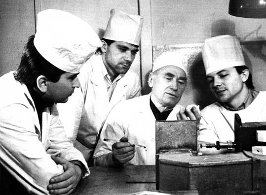
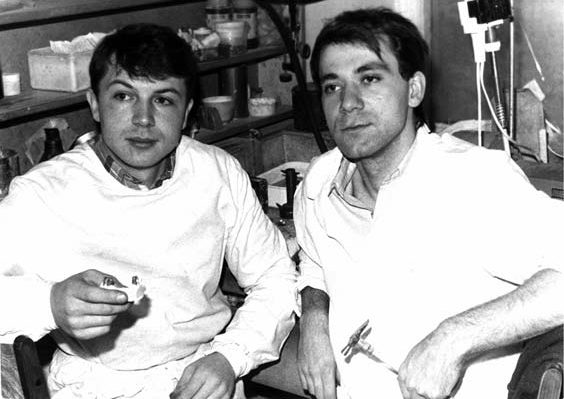
– Отже, перешкоди подолані, шлях до здійснення мрії відкритий… А сьогодні уся ваша родина – стоматологи. Як це сталося?
– Студентське кохання… Однокурсниця, одногрупниця Лариса Шинкевич стала моєю дружиною. Кохання спалахнуло на першому курсі, з перших днів знайомства. Лекції, семінари, виїзди в колгосп… Було студентське гарне життя. Потім армія. Відслужив два роки, повернувся знову в інститут. Усі роки навчання ми були разом. На четвертому курсі народилася наша перша дитина – Марійка, сьогодні вона вже доросла і теж стоматологиня.
Найцікавіше, що я дітей відмовляв від стоматології. Чим далі працюєш, тим більше розумієш, яка це нелегка професія. Ну дуже важка справа, якщо до неї ставитися серйозно! Ти відповідальний за здоров’я пацієнта, і буває, не все вдається, і треба тримати марку, постійно впроваджувати нові технології – усе це нелегко. Але діти, обираючи фах, реагують не стільки на застереження батьків, скільки на свої почуття.
Нині Марія вже – ортодонт, а Антон закінчив зуботехнічний коледж, допомагає мені як зубний технік, зокрема з 3D технологіями, і вступив у наш Полтавський державний медичний університет.
– Як бачимо, стоматологія об’єднує людей. І єднає сім’ї…
– Так.
Коли лікую за свій кошт чи інші благодійні джерела, це особливо надихає
– Коли Ви відчули, що треба мати власну клініку, і чому? Адже мати власну клініку, бізнес – це непросто…
– Мало того, що непросто, я ще й не бізнес такий мен… Для мене бізнес – щось трохи наче не моє. І в той же час із самого початку для мене стоматологія – це приватна справа. Тобто справа, де ти з початку до кінця відповідаєш за всі процеси. І через це відчуття я завжди знав, що колись це станеться, я повинен відкрити приватну клініку. І, мабуть, років з десять після переходу у приватну стоматологію я ніяк не міг ввести у свою роботу бізнес. Це для мене дуже важка справа – щоб усе було правильно, за модерним маркетингом у всіх процесах… Але життя змушує, доводиться якимись елементами бізнесу користуватися, тож сьогодні я вже бізнес-стоматолог, хоча… Коли я виконую роботи безкоштовно, на волонтерських засадах, то вони у мене навіть краще виходять. Коли я лікую за свій кошт чи інші благодійні джерела, це особливо надихає, душа розкрилюється…
– Ви радите всім колегам мати свою клініку?
– Складне питання. Тут треба, щоб амбіції якісь були і готовність працювати ще напруженіше, ніж просто на своєму робочому місці стоматолога-практика.
– Я знаю багатьох лікарів, у яких бізнес убив стоматолога…
– Я теж знаю таких. Якщо ти вибудовуєш приватну структуру, то передусім маєш вкластися матеріально, інтелектуально, працювати як стоматолог і не очікувати великих прибутків сьогодні ж. А коли ти і твої колеги по клініці досягнете певного рівня професіоналізму, впровадите новітні технології, набудете життєвого, професійного і бізнесового досвіду, гроші вже автоматично надходитимуть. І ти працюєш, не втрачаючи тих позицій, які здобув. Треба закохатися в цю професію, проявити себе, працювати так, щоб пацієнт був задоволений, бо його стоматологічне здоров’я зміцнилося. І тоді гроші вже будуть іти самі.
– А як ваша клініка КомпоДент-Орто працює в умовах воєнного стану?
– Клініка працює за повною програмою, як і працювала, усі сім днів на тиждень, робимо протезування, брекет-лікування, ендодонтію, пряму реставрацію зубів… Спочатку після повномасштабного вторгнення рашистів в Україну було важко утримати такий процес, і морально, і невелику кількість персоналу ми втратили, але все це довелося витримати, і я вважаю своїм досягненням те, що клініка працює. Збережений рівень зарплат, який би задовольняв персонал на сьогодні, і я цьому радий, враховуючи те, що ми багато лікуємо воїнів за свій кошт.
– Розкажіть, як осередок Асоціації приватних стоматологів України переріс у волонтерську організацію.
– Під час війни волонтерська допомога захисникам України – це питання нашого виживання, і професійного також. Оборона країни, захист життя і здоров’я воїнів – затратна річ. Постійна ефективна волонтерська допомога фронту без об’єднання зусиль активної спільноти неможлива. Тому я використав цю платформу стоматологів, і група наша зростає, вона вийшла за межі лише приватних практик, тут є і викладачі з нашого медуніверситету, і стоматологи з комунальних клінік, і навіть лікарі – не стоматологи, котрі хочуть допомогти армії. Долучилися й стоматологи з інших областей – Київської, Житомирської, Харківської, Черкаської, Кіровоградської, Львівської, Одеської, а також з-за меж України…
– Члени осередку Асоціації приватних стоматологів надають невідкладну безкоштовну допомогу українським воїнам, які по службі опинилися в Полтаві. Як організована ця допомога, яким досвідом можете поділитися?
– У нас уже певний досвід був і до цієї активної фази російсько-української війни. З 2014 року ми надавали стоматологічну допомогу нашим воїнам – і після Іловайська, і після Дебальцевого, коли було дуже багато поранених у військовому шпиталі. Ми вже тоді мали відпрацьовані алгоритми волонтерської допомоги, взаємодіяли з військовими стоматологами.
Розуміючи, що потреба у нашій допомозі буде ще більшою, невдовзі після початку повномасштабної війни ми зібралися, стоматологічна спільнота – тут були працівники і державних структур, і приватних, щоб обговорити план дій. Я запропонував: до нас будуть звертатися, тож є сенс об’єднатися організаційно, щоб усі розуміли, як діяти. Петро Миколайович Скрипников, обласний стоматолог, доповів, що є бюджетні кошти для лікування і навіть протезування військових, тож для первинної допомоги і для об’ємного протезування воїнів ЗСУ слід направляти в обласну стоматологічну клініку.
А добровольчі батальйони на той час не були включені в цю програму. І ми надавали стоматологічну допомогу добробатівцям, контактували безпосередньо з керівництвом батальйонів. Тож узяли на себе координаційну роль – оглядати бійців, у яких є стоматологічні проблеми, і розподіляти на лікування до тих, котрі на зборах сказали, що готові надавати допомогу.
Отже, моя клініка є оглядовою, а ми добре знаємо, які клініки у Полтаві на чому спеціалізуються, тож і направляємо відповідно – кого на хірургію, кого на терапію чи ендодонтію.
Прикметно, що бійці, котрі звертаються за допомогою, потребують якісного стоматологічного лікування. Вони сучасні люди, це не просто «ой, допоможіть хто-небудь як-небудь!» Вони хочуть якісної стоматологічної допомоги, я це вітаю і готовий допомагати постійно. Ми в нашій клініці всіх оглядаємо, частину пацієнтів самі ж і лікуємо, решту розподіляємо по всіх клініках Полтави і навіть у Кременчук, бо є у нас члени осередку і з цього міста. Так що все йде організовано, і це дозволяє уникнути перевантажень у тій чи іншій клініці.
Формуємо аптечки для фронту, які постійно удосконалюються
– Волонтерство за покликом душі: як створилася ця група? Я бачив у мережах, що хтось із стоматологів допомагав закуповувати зброю, хтось продукти чи одяг, а група, яка назвалася «Тил Полтава» і відкрила свій телеграм-канал, спеціалізується суто медично: комплектує індивідуальні аптечки для воїнів і медичні наплічники для військових медиків… З чого складаються ці вкрай потрібні на фронті речі? Ви вже в цьому фахівець…
– Так, я вже почуваюся профі у формуванні цих тактичних речей. Ми з одним військовим медиком днями згадували, з чого починали. У мене у березні були Zip-пакети (целофанові пакети-струна), куди ми з автомобільних аптечок, привезених з європейських країн, перекладали потрібні на фронті засоби, і це тоді вважалося класним забезпеченням для наших бійців. Сьогодні забезпеченість Збройних Сил України аптечками за державний кошт значно зросла, однак є питання, пов’язані з терміновістю їх надходження. Якщо підрозділ заходить на передову, усі бійці ними забезпечені. Але через кілька днів інтенсивних боїв чогось може не вистачати, адже це витратні матеріали. Державний логістичний ланцюжок потребує певного часу, а турнікет чи бандаж потрібен тут і тепер. І ми можемо оперативно їх передати туди, де вони потрібні, – конкретному підрозділові, блокпосту.
Сьогодні ми вже дійшли думки, що можна готувати аптечок менше, але кращої якості. Що це значить? Наприклад, нам раніше шили аптечні сумки без відривної платформи, що ускладнювало оперативне використання аптечки у складних бойових умовах. Тепер наші аптечні сумки більш ергономічні та зручні. Тактична медицина розрахована на поміч самому собі. Якщо є поранений, а завдання ще не виконане, то за мить після поранення побратими не зможуть підійти до нього. Боєць має сам собі надати першу допомогу – це правило номер один у тактичній медицині, натовські стандарти. Оперативність тут дуже важлива. Сумка з відривною платформою буде вдвічі дорожчою, тож, можливо, кількість аптечок, які ми готуємо для фронту, зменшиться, але вони ефективніше рятуватимуть життя і здоров’я наших воїнів.
Щодо турнікетів, то нині в Україні беззаперечно приймають два види турнікетів – американський «СAT» і наш український «СІЧ». На інші види були нарікання. Потужність вітчизняного виробництва турнікетів «СІЧ» недостатня, і ми можемо придбати тільки 30-50 на місяць при нашій потребі 100-150… Тому я розіслав запити всім небайдужим, зокрема і нашим закордонним колегам, які з перших днів повномасштабної рашистської агресії нас активно підтримували – Ларисі Хміль і Оксані Нікітіній (США), Катерині О’Кілл (Велика Британія), Олегові Ковпаку (Німеччина), Жанові-Луї Бутьє (Франція) – щоб придбати турнікети «CAT». Вони по 1600-1700 гривень, дорого, звичайно, сотня коштуватиме мінімум 160 тисяч гривень, але якість дуже важлива.
Інші складники аптечок, вироблені в Україні, більш-менш якісні, ми можемо їх постійно закуповувати. Кошти є, нам довіряють, знижки роблять. Зараз усе у нашій волонтерській роботі змінюється в бік якості, ми формуємо такі аптечки, щоб було не соромно, щоб вони взагалі стали еталоном аптечок для фронту у відповідності зі світовими стандартами.
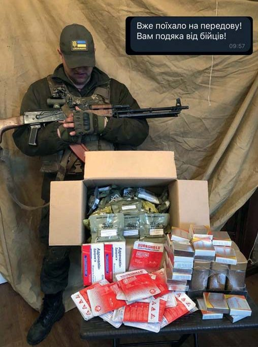
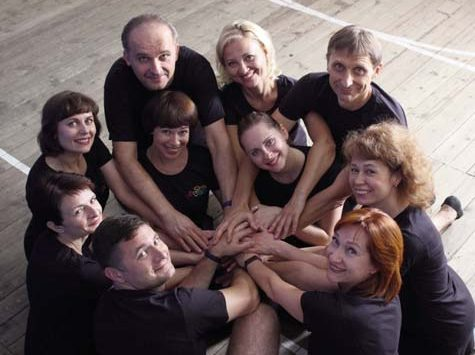
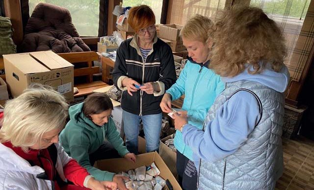
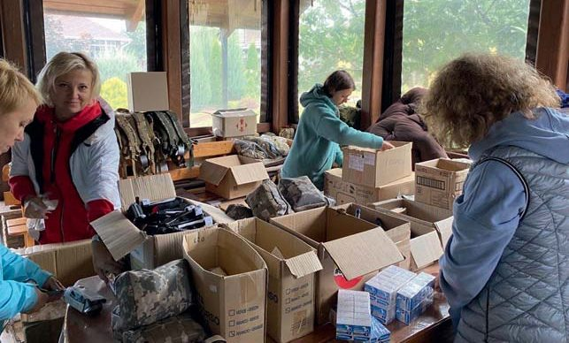
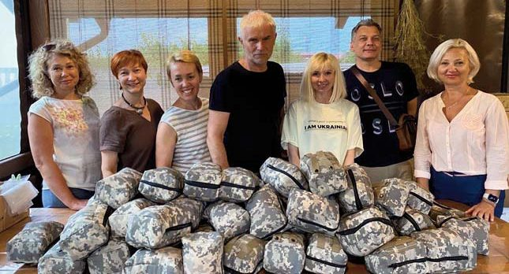
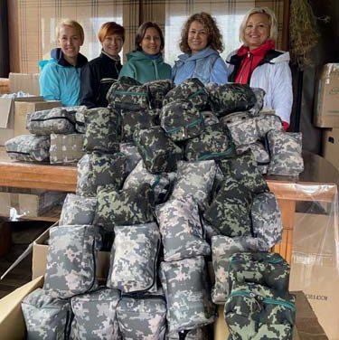
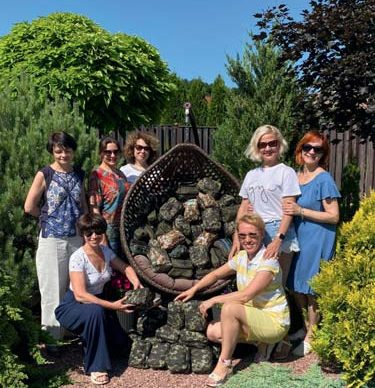
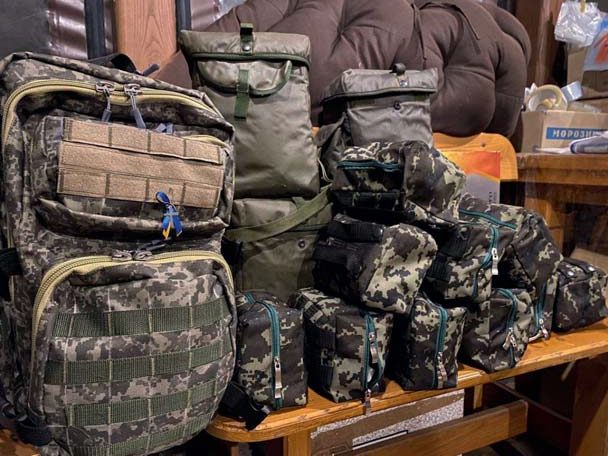
Складові тактичної медицини отримані за призначенням. Разом з друзями-волонтерами Олегом Ковпаком (Німеччина) та Арно Моньє (Франція).
– Волонтерство потребує коштів. Як і звідки фінансується діяльність групи «Тил Полтава»?
– Багато джерел, багато небайдужих людей, на щастя. Перші фінансисти – це були мої знайомі. Я навіть не встигав записувати, хто дав і скільки. Перші тижні після 24 лютого – це було просто щось фантастичне, як українці згуртувалися навколо допомоги ЗСУ! Потім була ще пора, коли найактивнішу фінансову підтримку надавали мої однокурсники, випускники ПДМСІ 1992 року випуску. Далі все стало більш структуровано, до групи приєднувалося все більше колег. Але на рахунок благодійного фонду «Тил Полтава» кошти надходять не лише від стоматологів, а й від загалу полтавців і не тільки, яких навколо себе згуртувала моя донька Марія Кириленко, котра і є керівницею та засновницею цього фонду.
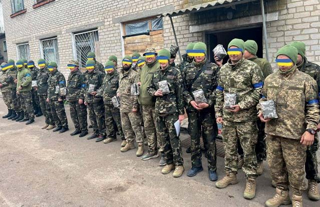
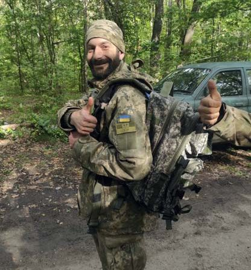
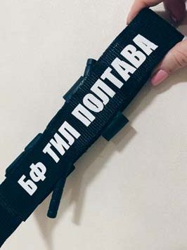
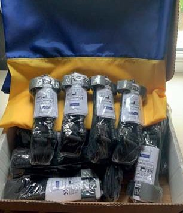
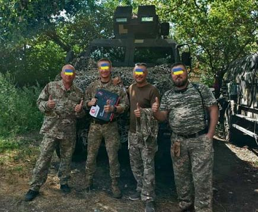
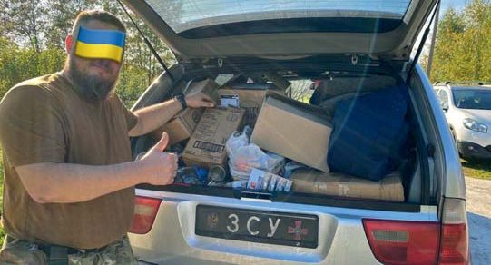
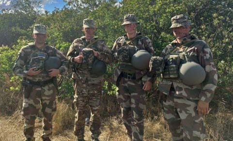
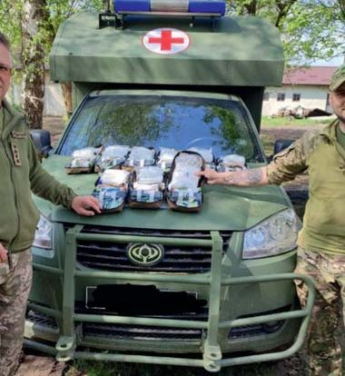
Фото-подяки від захисників полтавським волонтерам.
Уся Україна вірить у нашу Перемогу! Уся Україна на це працює!
– Наша розмова йде навколо допомоги Збройним Силам України. Періодично я зустрічаю на Ютубі опитування «Як ви, українці?» Варіанти відповідей: вірю в ЗСУ, Президенту, молюсь, усі варіанти, свій варіант… За який варіант Ви віддали б свій голос?
– Я пишаюся українцями, які сьогодні захищають найвищі людські цінності від світового зла. І горджуся, що я українець. У нас, українців, такий етап у житті, який колись мав відбутися. Я вірю, що навіть оця трагедія, оця війна, очистить Україну, кажучи словами Тараса Шевченка, від «рабів, підніжків, грязі москви», дасть нам таку віру у свої сили, що після всього цього Україна просто стартоне! Я в це вірю і цим живу. Мої всі батьки, діди і прадіди жили в Україні, я знаю велику їхню історію, яку навіть описала моя мама Любов Олексіївна. Вона була філологинею, померла у квітні, вже під час війни, це було ще одне горе для нас. Вона глибоко вивчала історію України, на прикладі своєї великої родини відстежувала всі ті етапи, що були пов’язані зі спротивом українців поневоленню, боротьбою за незалежність, за право на життя, право вільно працювати, займатися ремеслом, до якого лежить душа.
І от настала черга нашому поколінню і поколінню наших дітей це виборювати. І я сподіваюся, що цього разу вулкан народного гніву знесе в тартар наших вічних воріженьків, і вони не стануть більше нам на дорозі. Ми переможемо! Бо інакше нас просто не буде.
– Як уявляєте собі день, коли в Україні буде оголошено про перемогу?
– Мені аж подих перехопило… Я дуже цього чекаю. Сьогодні ще важко гадати, коли конкретно це буде, але це неодмінно станеться. Уся Україна у це вірить! Уся Україна на це працює!
– Якою, на Ваш погляд, має бути Україна після перемоги?
– Ідеалізувати не буду, я доросла людина, але те, що буде значно краще і трішки простіше й чесніше у підходах до держбюджету, до олігархічних структур, до розвитку підприємництва, більше справедливості, – у це я вірю. Бо Україна вже зробила певні кроки, щоб бути кращою.
У будь-якого чиновника уже будуть запобіжники. Він розумітиме, що коли до цього жив трохи не так, як того вимагало суспільство, то віднині це йому не минеться безкарно. Я вже не кажу про потребу в справедливості. Ця ментальна риса українців сьогодні проявляється особливо яскраво на тлі жорстокості, кривавого безуму окупантів.
– Тобто Українська Держава має бути більш справедливою…
– Так, справедливішою, прогнозованішою, ще демократичнішою. Світлішою, чистішою у всіх розуміннях цього слова. І, ясна річ, – надійно захищеною від агресивного сусіда.
– Стоматологічний прийом і волонтерство заповнюють усі Ваші дні… А чи буває у Вас вільний час і чим він заповнений?
– Бачите, до війни і під час війни – це вже зовсім різні речі. Якщо в мирний час я міг захоплюватися спортивною риболовлею чи грати у більярд, то нині у вільну годину я йду в те приміщення, де у нас конвеєр зі збору аптечок тактичної медицини, і наводжу там порядок. Для мене це такий самий заспокійливий засіб, як для жінок в’язання чи для когось перебирання чоток.
У цьому підвальному приміщенні працюють волонтерки з ансамблю українського танцю «Візерунки» нашого рідного ПДМУ. Колективом керує моя дружина Лариса Кириленко, вона ще й хореограф. Ці дівчата – доцентки, викладачки ПДМУ… Це така довга історія, як ми з ними єдналися у волонтерський колектив. Їздили на розвантаження гуманітарних вантажів, і щоб чітко розуміти, які ліки надійшли, треба було, щоб були і стоматологи, і фармакологи, і фахівці з лікувального факультету… Тепер ці завзяті, талановиті українки збирають аптечки для фронту.
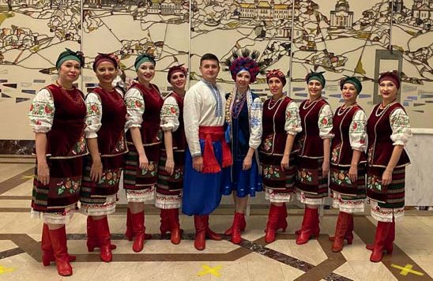
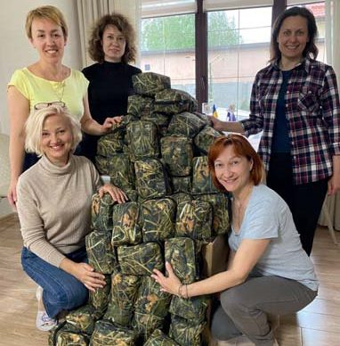
– І традиційне побажання читачам «ДентАрту»…
– Я бажаю всім колегам-стоматологам, усім українцям тільки Перемоги! І не просто чекати її, а робити все для неї! Коли я сьогодні вітаю когось із днем народження, то кажу: «Бажаю, щоб збулася Ваша найбільша мрія!» І у відповідь чую, що найбільша мрія – щоб ця війна закінчилася, і неодмінно нашою Перемогою!
Багато чого ще можна побажати колегам: любові до своєї справи, професійних злетів… За умови Перемоги усе це буде. І Україна стане однією із найсильніших держав світу. Ще за нашої пам’яті. Я в це вірю!
У нас дуже талановита молодь. Вона вже сформована в сучасній стоматології. І перед тими, хто по-справжньому любить свою професію, відкриються такі безмежні горизонти, що не стати класним стоматологом буде гріх…
– Саме так! Дякую, що знайшли час для розмови!
– Разом до Перемоги!
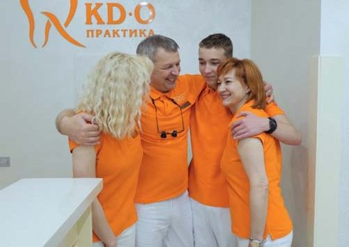
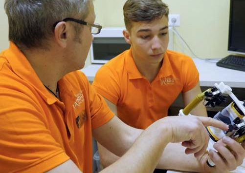
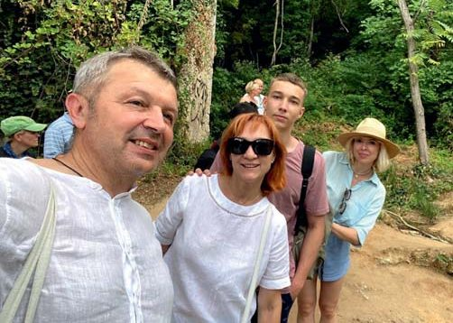
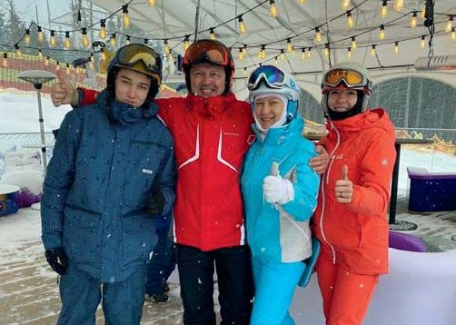
Розмовляв Сергій Радлінський. Світлини з архіву Олександра Кириленка.